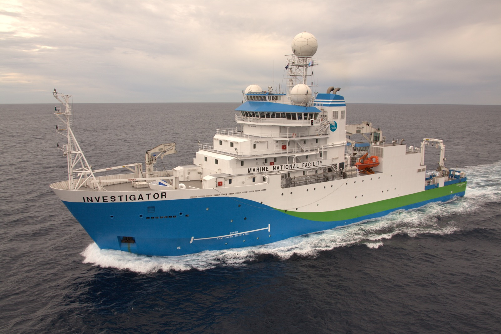

Most of the seafloor has never been surveyed in any real detail. Satellite altimetry gives a coarse, continent-scale picture, but resolving individual seamounts, plateaus and the boundaries between continental and oceanic crust means going to sea. I sail on national research vessels to collect gravity, magnetic and bathymetric data, and to dredge and core rock samples from features that are otherwise only visible as vague bumps in a satellite-derived map.

RV Investigator, CSIRO's Marine National Facility research vessel, used for geophysical survey voyages around Australia. Image: CSIRO / Science Image, CC BY 3.0.
Why the northwest margin
A current focus is Australia's northwest margin, the first part of the continent to break away from Gondwana. The deep seafloor between Australia and Indonesia (the Argo, Gascoyne and Cuvier abyssal plains) records a complex, multiphase history of continental rifting through the Jurassic and Early Cretaceous, but remains poorly sampled. An upcoming Marine National Facility voyage will target submarine plateaus in this region to test competing explanations for how they formed (see current projects).
From data to structure
Gravity and magnetic data are indirect: they measure a field at the sea surface, not the rock itself, so turning them into a map of crustal structure means modelling. I've worked on methods for depth estimation from magnetic gradients (the tilt-depth method), and more recently on forward-modelling the magnetisation of the oceanic lithosphere directly from satellite magnetic data (see curiesphere).